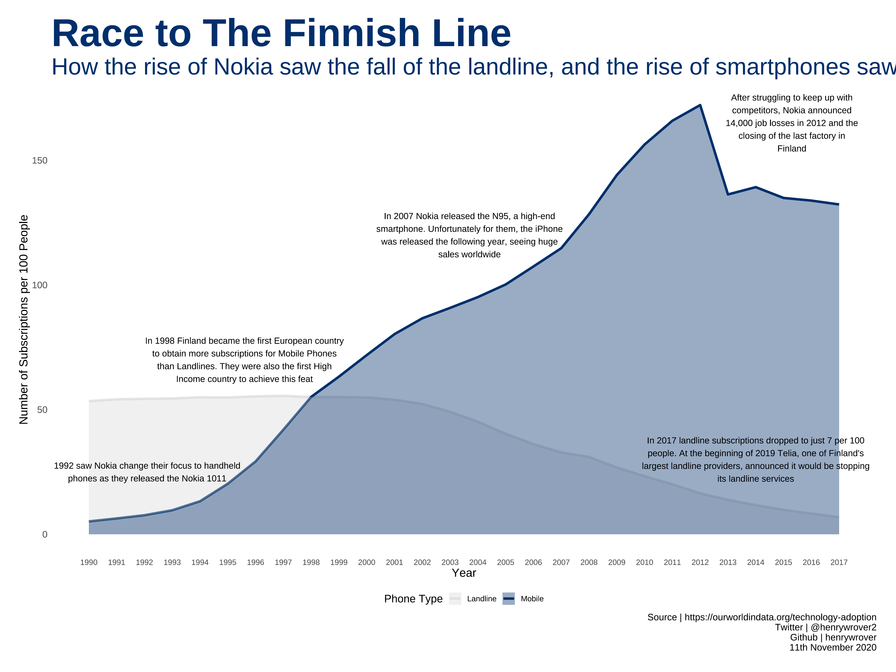

library(tidyverse)
library(showtext)
theme_set(theme_minimal())
mobile <- read_csv('https://raw.githubusercontent.com/rfordatascience/tidytuesday/master/data/2020/2020-11-10/mobile.csv')
landline <- read_csv('https://raw.githubusercontent.com/rfordatascience/tidytuesday/master/data/2020/2020-11-10/landline.csv')
# wrapper function for annotation
wrapper <- function(x, ...) paste(strwrap(x, ...), collapse = "\n")
a_one <- "1992 saw Nokia change their focus to handheld phones as they released the Nokia 1011"
a_two <- "In 1998 Finland became the first European country to obtain more subscriptions for Mobile Phones than Landlines. They were also the first High Income country to achieve this feat"
a_three <- "In 2007 Nokia released the N95, a high-end smartphone. Unfortunately for them, the iPhone was released the following year, seeing huge sales worldwide"
a_four <- "After struggling to keep up with competitors, Nokia announced 14,000 job losses in 2012 and the closing of the last factory in Finland"
a_five <- "In 2017 landline subscriptions dropped to just 7 per 100 people. At the beginning of 2019 Telia, one of Finland's largest landline providers, announced it would be stopping its landline services"
plot_data <- landline %>%
filter(entity == "Finland") %>%
inner_join(mobile, by = c("year", "code"), suffix = c("_land", "_mob")) %>%
pivot_longer(cols = c("mobile_subs", "landline_subs"),
values_to = "subs",
names_to = "phone_type")showtext_auto()
ggplot(plot_data, aes(x = year, y = subs)) +
geom_line(aes(color = phone_type), size = 1.5) +
geom_area(aes(fill = phone_type), alpha = 0.4, position = "dodge") +
scale_color_manual(values = c("grey90", "#002f6c"),
labels = c("Landline", "Mobile")) +
scale_fill_manual(values = c("grey85", "#002f6c"),
labels = c("Landline", "Mobile")) +
labs(title = "Race to The Finnish Line",
subtitle = "How the rise of Nokia saw the fall of the landline, and the rise of smartphones saw the fall of Nokia",
caption = "Source | https://ourworldindata.org/technology-adoption\nTwitter | @henrywrover2\nGithub | henrywrover\n 11th November 2020",
x = "Year",
y = "Number of Subscriptions per 100 People",
color = "Phone Type",
fill = "Phone Type") +
scale_x_continuous(breaks = 1990:2017) +
annotate("text", x = 1992.1, y = 25, label = wrapper(a_one, width = 50), size = 4) +
annotate("text", x = 1995.6, y = 70, label = wrapper(a_two, width = 50), size = 4) +
annotate("text", x = 2003.7, y = 120, label = wrapper(a_three, width = 50), size = 4) +
annotate("text", x = 2015.3, y = 165, label = wrapper(a_four, width = 35), size = 4) +
annotate("text", x = 2014, y = 30, label = wrapper(a_five, width = 60), size = 4) +
theme(
legend.position = "bottom",
text = element_text(family = "pt-sans", size = 15),
axis.text.x = element_text(size = 10),
plot.title = element_text(size = 50, color = "#002f6c", face = "bold"),
plot.subtitle = element_text(size = 30, color = "#002f6c"),
plot.caption = element_text(size = 12),
legend.text = element_text(size = 10),
legend.title = element_text(size = 14),
panel.grid = element_blank(),
plot.margin = margin(25, 25, 25, 25)
)